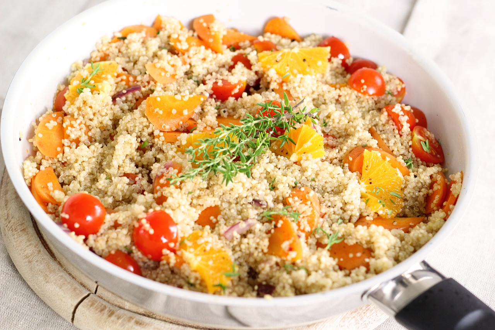
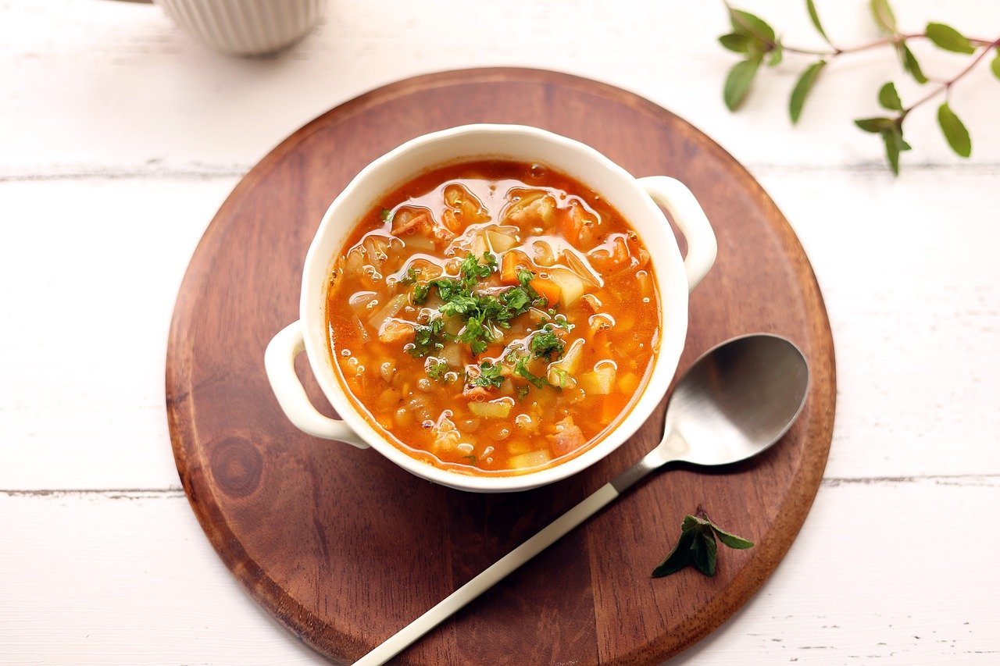

VEGETARIAN 레시피

채식 비빔밥
신선한 채소와 향긋한 고추장 소스를 곁들인 채식 비빔밥입니다. 간편하면서도 영양가가 풍부합니다.

퀴노아 샐러드
단백질이 풍부한 퀴노아와 다양한 채소가 어우러진 건강한 샐러드입니다. 상큼한 드레싱이 포인트입니다.

채소 스프
신선한 채소와 허브가 가득 담긴 따뜻한 스프입니다. 추운 날씨에 안성맞춤인 요리입니다.